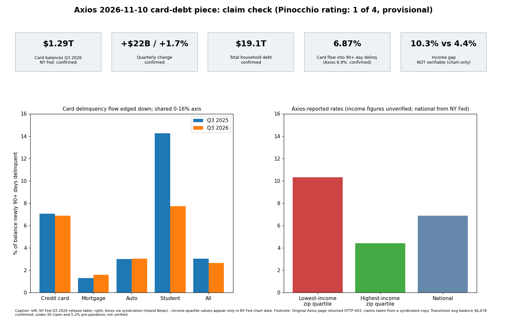

Axios card-debt piece: mostly accurate, rated 1 Pinocchio (provisional)

Summary of findings
Every headline number I could reach checks out against the New York Fed's Q3 2026 release, so I rate the piece 1 Pinocchio on the 0-4 scale. The rating is provisional because the key income-gap figures could not be verified and the original page was unreachable.
- Confirmed (NY Fed press release, 2026-11-10): card balances about $1.29T, up $22B (1.7%) in the quarter and $52B over the year; total household debt $19.1T (up $334B, 1.8%); card flow into 90+ day delinquency 6.87% vs 7.05% a year earlier.
- Confirmed (TransUnion Q3 2026 via Finviz): average balance per borrower $6,678.
- Not checkable here: 10.3% vs 4.4% serious delinquency in lowest vs highest income neighborhoods (values exist only in the NY Fed Liberty Street chart data file; the text confirms the gap widened since 2022); "under 30 highest rate" (no age breakdown in the release or blog text); 5.2% pre-pandemic rate (not located); "up about $5T since 2019" (consistent with roughly $14.15T at end-2019 from my recollection, not re-sourced).
- Limitation: axios.com returned HTTP 403. Claims were reconstructed from a syndicated copy (Inland News Today) and search summaries, so wording and quotes in the original were not checked. No attributed quotes were identified in the syndicated version.
Context that could mislead: "Record" is a nominal figure, not inflation-adjusted (the piece says so). The headline pairs record balances with distress, yet card delinquency flow fell year over year, and TransUnion's balance-level 90+ delinquency also eased (1.99% vs 2.05%), though its borrower-level rate rose (2.50% vs 2.37%). Rates by neighborhood income are an ecological measure and do not describe individuals. The Liberty Street post attributes part of the gap to pandemic-era card issuance to lower-income, lower-score borrowers, which the headline does not convey. The 10.3/4.4 ratio (2.3x) supports "more than double" if the figures are right.
Claim table
| Claim | Verdict | Source |
|---|
| Card balances record $1.29T | True (nominal) | NY Fed release |
| +$22B in quarter (1.7%), +$52B yoy | True | NY Fed release |
| Total debt $19.1T | True | NY Fed release |
| Serious delinquency flow fell to 6.9% | True (6.87%) | NY Fed release |
| Above 5.2% pre-pandemic | Not checkable here | - |
| 10.3% vs 4.4% by neighborhood income; gap widened since 2022 | Gap widening confirmed; numbers not checkable | Liberty Street Economics 2026-11-10 |
| Under-30 highest rate | Not checkable here | - |
| Average balance $6,678 (TransUnion) | True | TransUnion via Finviz |
| Democrats campaigned on prices in midterms | Not checked (political characterization) | - |
Sources
- https://www.newyorkfed.org/newsevents/news/research/2026/20261110
- https://www.newyorkfed.org/newsevents/mediaadvisory/2026/1104-2026
- https://libertystreeteconomics.newyorkfed.org/2026/11/a-look-at-the-wider-divide-in-credit-card-delinquency-by-income/
- https://finviz.com/news/416965/credit-access-expands-as-lenders-pair-growth-with-more-strategic-risk-management
- https://inlandnewstoday.com/story.php?s=81315 (syndicated Axios text)
- https://www.axios.com/2026/11/10/credit-card-debt-record-2026-delinquency-income-gap (403, not read)
Confidence: high on confirmed rows, low on the income-gap and age claims.